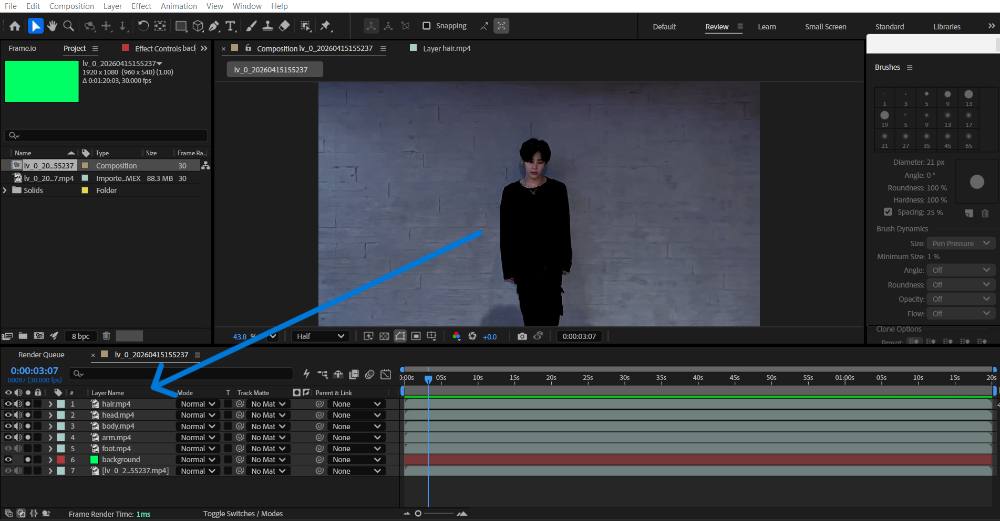

Duplicate the Layer & Add a Green Screen Solid
Select the footage layer in the timeline, then press Ctrl + D to duplicate it for each body part you plan to rotoscope. Additionally, create a new Solid layer (Layer > New > Solid…) and set its color to pure green — this acts as your green screen background to make masking and compositing easier.
💡
Rename each duplicated layer clearly (e.g. "Left Arm", "Head", "Torso") and place the green solid at the very bottom of the stack so it shows through wherever the subject hasn't been masked yet.
